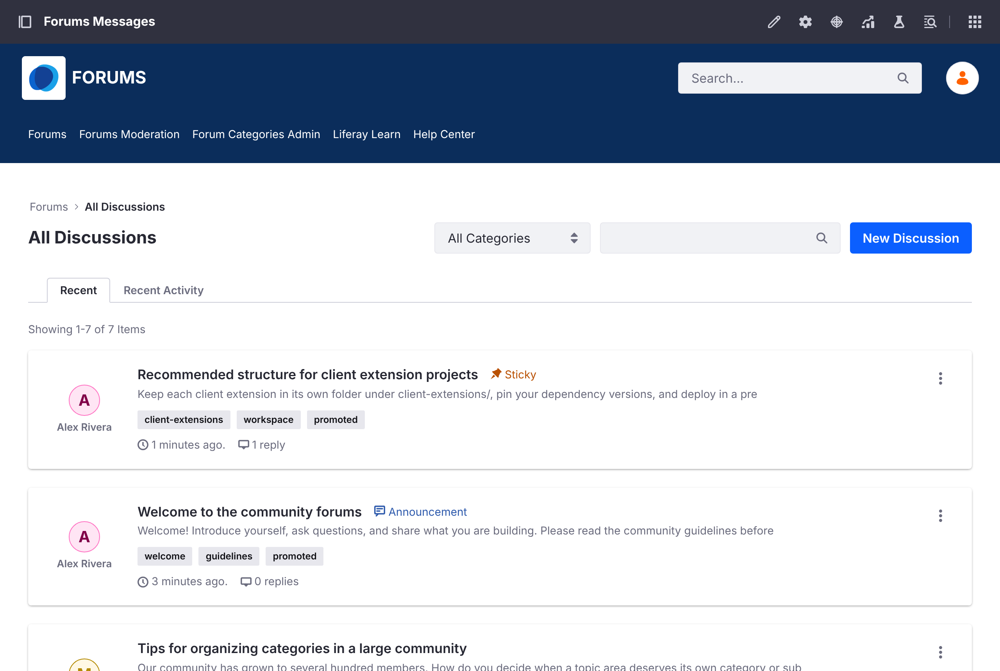
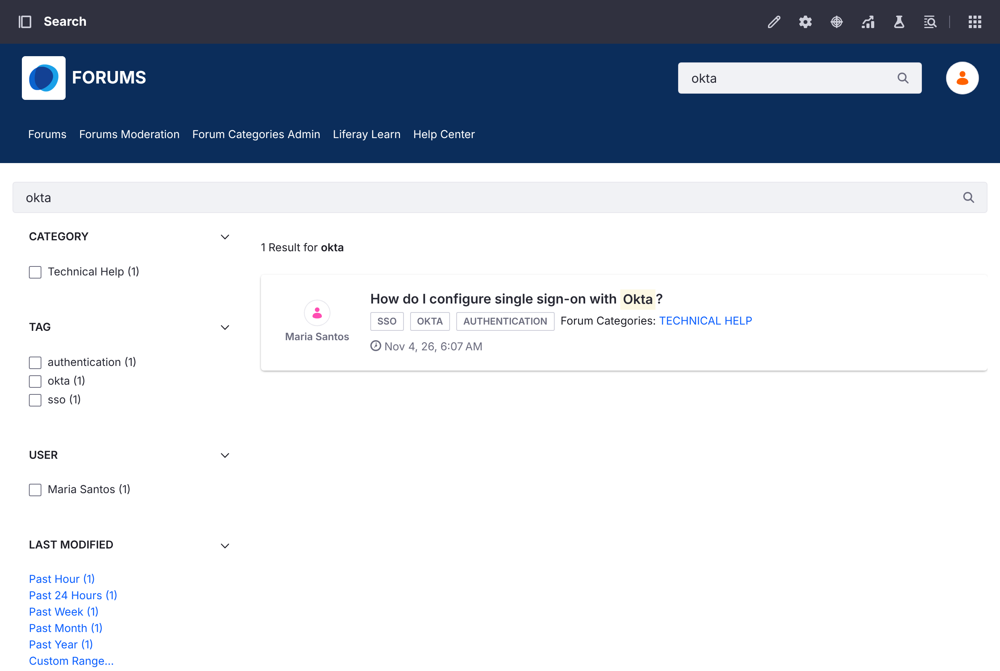

Browsing and Searching
The Forum Home Page#
The home page (/web/forums) shows community statistics (solutions, discussions, and messages), a search bar, the Promoted Discussions chosen by the community team, and a grid of categories. Click a category to see its topics.
All Discussions#
The discussions list shows every topic, or the topics of one category.

- Recent sorts topics by when they were created. Recent Activity sorts them by their latest reply.
- Topics with a priority (Urgent, Sticky, or Announcement) always appear first.
- Use the All Categories menu to show one category and its subcategories.
- Use the search box to filter the list by keyword, or click a tag to show the topics with that tag.
- Badges show a topic's state: Solved, Locked, Flagged, and its priority.
Search#
The search bar in the header and on the home page searches the forum's topics. The results page has facets to narrow results by Category, Tag, User, and Modified date.

Search only covers the topics of the current forum site.
Related Topics#
A topic page lists Related Topics: other topics in the same category, with the most recent activity first.